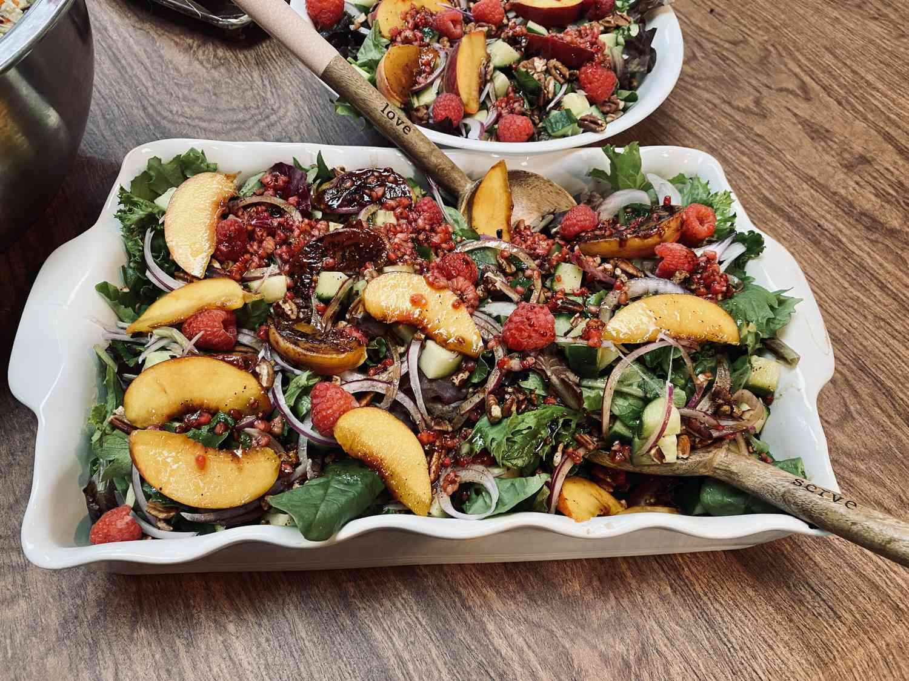

Healthier peach salad salad that is easy to modify for your tastes.
Combine vinegar, 2 tablespoons olive oil, honey, 2 teaspoons salt, and 1 teaspoon black pepper in a bowl and mix until well combined. Crush raspberries in a bowl using a fork and add to the vinaigrette.
Preheat an outdoor grill for medium-high heat and lightly oil the grate.
Lightly brush the cut surfaces of the peaches with vinaigrette. Cook on the preheated grill until browned, about 5 minutes.
Place chicken on a cutting board and sprinkle with 1 tablespoon olive oil and salt and pepper to taste. Cook on the hot grill until browned, 4 to 5 minutes; brush cooked side with vinaigrette. Flip and cook until browned on the second side and no longer pink in the center, 4 to 5 minutes more. An instant-read thermometer inserted into the center should read at least 165 degrees F (74 degrees C). Brush second side with vinaigrette.
Slice grilled peaches and grilled chicken and place in a bowl. Add tomatoes, mixed greens, cucumber, red onion, and pecans. Drizzle salad with remaining vinaigrette and mix thoroughly.
Use nectarines instead of peaches, if you like.
You can substitute 1 pound of salmon, pork, or beef for the chicken breasts.
Use sunflower seeds or almonds in place of pecans, if you prefer.